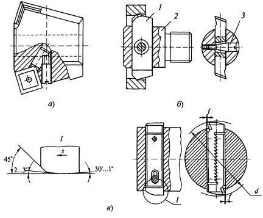
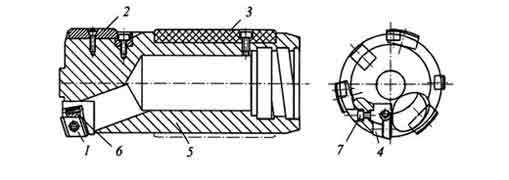

Расточные инструменты применяются для увеличения диаметров отверстий и являются широко универсальными инструментами, так как, в отличие от зенкеров, разверток и других инструментов, допускают регулировку (настройку) режущих кромок в радиальном направлении.
Расточными инструментами обрабатывают отверстия диаметром 1... 1000 мм и более с точностью JT5...JT6 и шероховатостью Ra 0,8...1,6.
Стержневые резцы имеют одну режущую кромку из быстрорежущей стали или в виде СМП из твердого сплава или сверхтвердых материалов.
Державки стержневых резцов в поперечном сечении имеют круглую, квадратную или прямоугольную формы. Наиболее простой и распространенный способ закрепления резца с державкой квадратной или круглой формы показан на рисунке ниже (а). Здесь резец 2 закреплен винтом 3 в оправке l; вылет резца регулируется винтом 4.
Для растачивания точных отверстий диаметром более 20 мм широкое распространение получили вставки типа «Microbohr» (б). На цилиндрической поверхности резца 5 имеется точная резьба с шагом Р = 0,5 мм. Регулировочная гайка 4 с внутренней резьбой и градуированной шкалой базируется своей конусной поверхностью в оправке l. В нужном положении резец закрепляется винтом 3 с шайбой 2. Поворот гайки на одно деление перемещает вершину резца в радиальном направлении (с учетом угла наклона продольной оси резца) на 0,01 мм. Резец оснащен напайной твердосплавной пластиной или СМП из твердого сплава.
Двухсторонние пластинчатые резцы-блоки применяют для предварительного и окончательного растачивания отверстий диаметром более 25 мм. По сравнению с однолезвийными инструментами они обладают большей производительностью, обеспечивают большую точность и низкую шероховатость поверхности отверстий.
Резцы-блоки изготавливают или целиком из быстрорежущей стали, или оснащают пластинами из твердого сплава, а для увеличения стойкости изготавливают сборными и регулируемыми по диаметру
Крепление пластинчатых расточных резцов в оправках может осуществляется неподвижно для d = 50... 150 мм (а), либо допускает «плавание» по одной оси (двухлезвийные блоки (б, в)). Выпадению резца-блока 1 из борштанги 2 препятствует винт 3, входящий с зазором в отверстие, выполненное в корпусе резца-блока (б).
«Плавающее» крепление резцов-блоков для d = 25...600 мм применяется для компенсации углового и линейного несовпадения осей обрабатываемых отверстий и инструмента. Указанное несовпадение осей происходит из-за погрешностей установки заготовки (инструмента) и зажимных патронов, деформаций элементов технологической системы и других факторов и приводит к снижению точности обработки и стойкости инструмента.
При схеме деления глубины резания заданная глубина t последовательно срезается каждым резцом головки (а):
t = t1 + t2 + ... + tn ( Z = 1, 2, ..., n ) , где n - номер резца.
При этом подача Szn , приходящаяся на каждое лезвие инструмента, равна подаче S на оборот инструмента или заготовки:
S = Sz1 = Sz2 = ... = Szn .
Расточные головки, работающие по схеме деления глубины резания, применяются для удаления больших припусков и имеют относительно низкую производительность.
При работе по схеме деления подачи каждая режущая кромка головки снимает полную глубину резания t, а подача S на один оборот инструмента или заготовки равна сумме подач, приходящихся на каждый зуб (б):
S = Sz1 + Sz2 + ... + Szn
Таким образом, расточные головки, работающие по схеме деления подачи, развивают значительно большую производительность, чем головки, работающие по схеме деления глубины резания.
Возможны два способа деления подачи между зубьями таких инструментов. При первом способе зубья располагаются равномерно по окружности, т.е. угловые шаги зубьев равны между собой:
ω1 = ω2 = ... = ωn
Расточные головки для обработки глубоких отверстий относятся к инструментам одностороннего резания с определенностью базирования.
На рисунке показана такая головка, предназначенная для растачивания глубоких отверстий диаметром 45...250 мм. Режущий элемент головки выполнен в виде кассеты 4 с продольной шпонкой, входящей в соответствующий паз на корпусе 5 головки. Кассета крепится в корпусе винтом 7. На ней с помощью клина 6 закреплена твердосплавная пластина l ромбической формы, которая имеет две режущие кромки. Настройка головки на диаметр производится путем смены направляющих 2 и регулировки вылета кассеты. В процессе обработки три твердосплавные направляющие 2 под действием радиальных составляющих сил резания и трения прижимаются к поверхности обработанного отверстия, обеспечивая тем самым поперечную устойчивость инструмента. Три пластмассовые (из полиамида) направляющие 3 служат для гашения колебаний расточной головки.
В варианте А стружка отводится вперед, а в вариантах Б и В - назад, и поэтому в процессе обработки отверстие должно быть заглушено.
Обработка отверстия такой головкой ведется в два этапа. На первом этапе производится растачивание отверстия. При этом стебель работает на сжатие, а твердосплавные направляющие 3 опираются на поверхность обработанного пластиной l отверстия. На втором этапе кассета 2 заменяется на другую, заранее настроенную на снятие припуска глубиной 0,2 мм. При этом направление подачи меняется на обратное, стебель работает на растяжение, а твердосплавные направляющие 3 опираются на поверхность обработанного отверстия, так как находятся впереди вершины СМП.